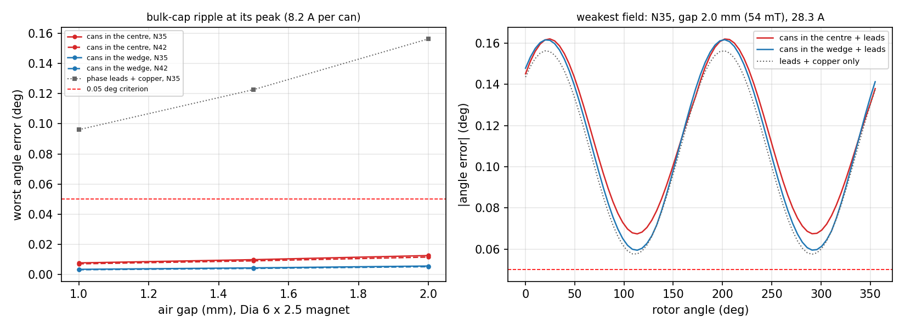

Where it is
Captured, placed and routed — 191 components, 111 nets, 577 pin connections, every one made, from scratch by the pipeline (re-routed 2026-09-23 for TI's buck parts; the README has exactly how); DRC clean, ERC clean, and KiCad's own exported netlist matches the intended one connection for connection. KiCad 9, in
hardware/single_board/: servodrive_S.kicad_pro, five sheets, one board.
Built as a variant of board A from the same generators, so the phase cells, the CPU wedge and
the encoder are board A's own; board A's generated output is byte-for-byte what it was.
| Board S | Board A | |
|---|---|---|
| Parts on the board | 195 (95 front, 100 back, 10 DNP) | 136 + 4 holes |
| Captured | 191 components, 111 nets, 577 connections | 136, 87, 425 |
| Routed | 1804 track segments, 405 vias (306 of them the tools') | 1361, 278 |
| Unconnected | 0 | 0 |
| DRC / ERC | 0 / 0 | 0 / 0 |
| Bus pad barrels, VMOT / GND | 7 / 8 | — |
python3 tools/schematic_s.py # netlist and checks
python3 tools/gen_boards.py --board s --force # emit, stitch, fan out (discards routing)
python3 tools/route.py --board s --rounds 1 --first EN_12V,USB_VBUS,LIN_A,EXP_GP19
python3 tools/route.py --board s --polish # twiceCopper, layer by layer
Board S's six copper layers as routed, plotted out of the board file by
tools/plot_layers.py and stacked in register — the same viewer as board A's
on the project page. Pick a layer to bring it to the front;
drag to pan, scroll to zoom. The cursor reads out in millimetres and in radius and angle.
The dot puts a layer on top at full opacity; the box says whether it is drawn at all.
Keys: 1–9 pick a layer, s solo, a all, m mirror, 0 fit. Angles are measured from the +x axis, the way the section boundaries at 0/68/136/204/256/308° are.
Rebuild after any routing change with
python3 tools/plot_layers.py --board s — route.py --board s runs it
at the end of every run.
What capture settled
GATE_EN is GATE_OFF on this board, and high kills the gate
rail. The 12 V buck's EN sits on a divider from the bus, up to 8 V, which no
GPIO may see, so the 2N7002 the sketch proposed does the pulling — and that inverts the
sense. The net is named for what high does. Through a reset the pin is pulled down (4k7,
against RP2350-E9, as the drivers' pulls are), the FET is off, the rail is on and the low sides
brake, which is what spec §3 asks of a reset. Firmware writes 1 to kill, not 0.
The LMR38010's datasheet (SNVSC73B) changed three of the sketch's values, each of which would have been wrong on the board:
- VREF is 1.000 V: the feedback bottom legs are 9.09k (12 V) and 24.9k (5 V), the datasheet's own table. The sketch's 11k and 27k made 10.1 V and 4.7 V.
- RT/SYNC cannot float or be grounded: each buck has 64.9k to ground, 400 kHz. The sketch's modules had no RT resistor.
- EN rises at 1.25 V (1.4 max): 470k over 22k would not have started the gate rail below 26 V. It is 470k over 68k — on at 9.9 V, 11.1 worst case, off at 8.7 V, inside the 12 V floor — which also holds the 2N7002's drain to 11 V when the TVS clamps at 87 V. The 5 V buck's EN is tied to VIN.
Two symbols are the project's own: the LMR38010, drawn from the datasheet's pin
table — the LMR336x0 and LMR36510 in KiCad's library share its package, not its pins
— and the SIT3088, derived from the MAX3485 as the sister project wires it.
The per-phase clamps are the 54 V grade. The USB-C's unused SBU pads carry
SBU1_NC/SBU2_NC: a pad with no net has no clearance class, and the router
laid USB_DP 0.137 mm from one.
What building it changed
The sketch answered “does it fit” with courtyards. A board answers to copper, and these are the differences that made:
- A through-hole lead is copper on both faces, at 60 V. C1001's + lead — a 2 mm square pad, 1.41 mm on its diagonal — landed on U15's pin 7 on the other face. Leads are now tested as their pads' bounding circles plus 0.45 mm.
- The sister project's DFN-8 draws its courtyard inside its own pads (±1.6 against ±1.72 mm): two SIT3088 sat 0.05 mm pad to pad with their courtyards apart. Widened for placing.
- 60 V parts keep 0.25 mm more from their neighbours: the EN divider's top resistor had its VBUS pad 0.36 mm from two ground pads.
- The buck module was drawn before its pinout was read. It is now laid against the pins, as TI's example layout is: the input cap left of pins 1–3, RT under pin 4, the divider at pin 5, the bootstrap cap at 7–8, the inductor over the switch corner. EN is between GND and VIN; it leaves as a 0.15 mm track between the input cap's pads, 0.40 mm from the VIN one, to the divider beside it. On the back the module is mirrored, as its footprints are, and the two modules are no longer stacked on opposite faces — neither could drop a via.
- The RS-485 relay, re-placed for its wiring. Port IN takes the rim slot at 241° beside its two transceivers and OUT the one at 219° beside its own, where the sketch had each port's pairs crossing the other's through the CPU's traffic; each SIT3088 is turned so its A/B pins face its port; its 100 n sits past the end of its pin row and its 120 Ω beyond its escape vias. The escapes were the missing piece: at 0.65 mm pitch the router never reached pins 1, 4, 6 or 7 of any of the four, the same trap board A's current-sense amplifiers set, and they get a stub and a via per pin the same way.
- The cans' + leads point outward, onto In2's VBUS at R 17 — the short way to the bridges — and the TVS's cathode faces the VMOT pad.
- In2 is VBUS everywhere but the CPU wedge, with a tab over each can's + lead, and +3V3 over the CPU wedge and the centre disc. The bucks are where board A's signal-wedge ground was.
- A VBUS spine on the outward face: VMOT pad, TVS cathode, C1001's + lead and the expansion header's four VMOT pins as one piece of copper. The header sits inside In2's +3V3 disc and a PD board can put 5 A through it; this is its way to the bus.
- The bus pads' barrels are drilled, not drawn: RS-485 port IN's mounting
tab is under the VMOT pad on the other face, and a fixed array came through onto it.
fanout.bus_fielddrills a lattice where the far face leaves room and carries on into the VBUS spine: 7 barrels for VMOT (5 in its pad, 2 in the spine beside it), 8 in the GND pad.
Three bugs in the tools, found here. The fan-out held new 60 V copper
only 0.15 mm from ordinary copper (board A's tools never laid any); it and the stitcher
ignored a footprint's own clearance (TI's PowerPAD asks 0.2 mm); and the router's
session rounds every part's rotation to a whole degree, which KiCad's import then
applies — 93 of board A's 140 footprints sit up to 0.48° off the generator's angles
on the routed board A today. route.py now puts every part back where it was after
the import. Board A is DRC-clean as it stands and was not touched; it straightens the next
time it is routed.
The sketch it grew from
Written 2026-09-22 while the arrangement was being argued, before capture; left as it was. Where the build changed something, the sections above say what.
The answer
As specified, it does not fit. With board A's rule that nothing goes inside
R 17, every variant tried leaves parts over: D1001 (SMDJ54A), U11 (LMR38010 12V), R802 (4k7 0.1%), C801 (100n), J13 (EXPANSION), J15 (RS485 port B), TP7 (RUN).
The board is short of rim, not of area, and the numbers are below.
With the middle of the board used, all of it fits — 67 new or re-placed parts, the checks clean, and nothing downgraded:
- Both bulk cans in the centre of the outward face, at 230° and 324°, 14.5 and 15.3 mm off the shaft axis, clear of the four screw heads.
- The 3 kW SMDJ54A beside the VMOT pad, on the outward face where the bus comes in. It fits there because the cans took their through-hole leads out of the power wedge.
- The spec's two LMR38010, each laid out as a module — the 100 nF input cap, bootstrap, RT and feedback divider against the pins, the inductor and first output cap within a few millimetres — 12 V on the signal wedge's back, 5 V on its front. Their other ceramics go where the rest of the board leaves room (below).
- RS-485 relayed by the CPU: two ports, each a point-to-point full-duplex link with its own receiver and driver.
- The 2×10 expansion header across the shaft axis, the middle of the stack, 1.96 mm clear of the nearest screw head.
Decided 2026-09-22, to make it fit:
- The MT6701's five stitching vias move out about 2.5 mm, onto short stubs, to clear the header's pad rows. They are the stitcher's via-in-pad today; a 1.27 mm header's rows cannot straddle them. They stay inside the magnet keepout on the back, where nothing else goes.
- Both RS-485 ports as JST-SH 6 (1.0 mm), side by side on the power wedge's motor-facing rim. Two JST-GH 6 need 52° of rim, the whole wedge, bosses included; the USB-C's through-hole tabs take the other wedge's. SH holds by friction only.
Small parts round each LMR38010: 1 µF/100 V 0805 in, a 3 × 3 mm 33 µH inductor, 22 µF 0805 out. Replaced on 2026-09-23, below: the internal compensation wants TI's own L and COUT.
Decided 2026-09-23: TI's parts round each LMR38010 (SNVSC73B table 9-1, 400 kHz from a 48 V bus). The internal compensation is tuned for those values, and the small parts were well off them — a 22 µF 0805 is a few µF at 12 V.
| 12 V gate rail | 5 V logic rail | |
|---|---|---|
| Inductor | 68 µH SWPA4030S680MT, 4×4, 0.72 A sat. | 33 µH SWPA4030S330MT, 4×4, 1.1 A sat. |
| Peak current at the spec's load | ~0.3 A at 0.1 A | ~0.7 A at 0.5 A |
| Output | 22 µF/25 V 1206 + 22 µF/25 V 1210 X7R, ~20 µF at 12 V (TI: 22 nominal, 15 minimum) | 3 × 22 µF/25 V 0805 (TI: 3 nominal, 2 minimum) |
| Input | 100 nF/100 V 0805 at the pins, 4.7 µF/100 V 1206 X7S (TI: 4.7 µF minimum) | |
They do not fit a rigid module: the signal wedge held the old one with fractions of a millimetre to spare, and a 4 × 4 inductor alone left both bucks nowhere to go. So the placer keeps rigid only what has to be on a pin, puts the inductor and first output cap wherever they fit within a few millimetres of the pad they join, and places the rest last. That still leaves three with no room in the link wedges — both 4.7 µF input caps and the 12 V rail's second 22 µF — and they go in the outward centre, at the user's call. The 4.7 µF caps are 10–18 mm from their bucks, on a finger of In2's VBUS plane: across the In1/In2 plane pair that is a nanohenry or two, nothing at 400 kHz, and the 100 nF at each IC's pins takes the switching edges.
Checked 2026-09-22: the cans' field at the encoder is not a problem. The
simulation's encoder phase, re-run for board S (sim/run.py --phase P5S), puts each
can's ripple loop where it runs — both leads, the inside of the can, and out round the
VBUS annulus to the bridges with the ground return beneath it — at the peak ripple of the
20 A RMS burst, 8.2 A per can. The cans add 0.008–0.013° over the
Dia 6 magnet's gap tolerance, under a quarter of the 0.05° criterion; in the power wedge
they would add 0.004–0.006°. The leads are short stubs and the sensor is below their
ends, which is why the first estimate, 0.06°, was high.

The RS-485 relay
Port IN (upstream) is UART0 on GPIO0/1; port OUT (downstream) is a PIO UART on GPIO2/3, which were RS485_DE and RS485_TERM_EN and are not needed any more: every driver is alone on its pair, so its enable is tied on, and every receiver has a 120 Ω across it, always — the termination jumpers are gone. Four SIT3088 and four SM712, one per pair. The pinout stays as the spec has it, named from each port's own side, so a straight cable still works. The cost: a dead or unpowered drive cuts off everything below it, where the spec's pass-through let the bus carry on.
Two bucks or one
The spec has two because a fault on the gate rail should not take the CPU down, and because GATE_EN can then kill the gate rail through the 12 V buck's own enable. Both fit, so keep two. One buck with a load switch keeps the kill but not the isolation: the TPS22810 has no current limit, and an eFuse that has one (TPS2596) is as big as the buck it would save.
What the centre carries
Outward face: the two cans, the expansion header across the axis, and the LED, BOOTSEL and four test pads. Motor-facing face: parts under 1.5 mm only, outside the Ø12 magnet keepout and 3.75 mm clear of each M3 standoff — the four SIT3088 with their decoupling and termination, in the quadrant toward the ports; the 3V3 LDO and its row; the VBUS-detect divider. The cans' leads come through here too, trimmed flush. Kept out: the bucks and their inductors, the TVS, the 60 V divider, and the ESD parts, which belong at their connectors. Let in (2026-09-23): three of the bucks' ceramics that the link wedges had no room for — the two 4.7 µF/100 V input caps on the outward face beside phase A's DC-link caps, and the 12 V rail's second 22 µF at the top of the centre, toward phase B's driver. None of them in front of the CPU: between the M3 head at (0, −9.5) and C1002 is the outward face's only way from the RP2350 to the header, encoder and LED, and a cap there left five of them unrouted. Nothing switching, nothing ferrous.
Why the rim, not the area
A horizontal connector has to reach the board edge, and a round board has only 360° of edge. Board A spends 204° of it on the three phase cells — heatsink lands on one face, motor lead pads and the phase pour on the other — and 52° on the CPU wedge's crystal and flash. That leaves the two link wedges, 52° each, with an M2.5 boss at each end. Measured at the rim:
| Rim it takes | Faces | |
|---|---|---|
| USB-C, HRO TYPE-C-31-M-12 | 26.6° | both — its shell tabs are through-hole |
| JST-GH 6, horizontal | 26.1° | one |
| JST-SH 6, horizontal | 21.8° | one |
| One link wedge | 52° | a boss at each end |
So the signal wedge can hold the USB-C and nothing else of that size on either face, and the power wedge can hold two SH 6 but not two GH 6. The only library USB-C with SMD shell tabs is a 6-pin power-only part. The front of the power wedge is the two cans and the bus pads; nothing deeper than 3 mm fits outboard of the cans.
What board A's netlist changed
- Gone: J7, J8 (power link), J9 (signal link), TP1–TP3. C603 and C604 stay as the two rails' output caps.
- GPIO: 0/1 UART0 for RS-485 port IN; 2/3 a PIO UART for port OUT (they were RS485_DE and RS485_TERM_EN). 19–24 to the expansion header — 20/21 are I2C0 SDA/SCL and 20–23 are SPI0 RX/CSn/SCK/TX, which covers a FUSB302 or a W5500, and 19 and 24 are interrupt and reset. USB_VBUS_DET moves from 22 to 25. SWCLK and SWDIO go to the header too, and to test pads.
- Per-phase clamps: TPSMF4L64A → the 54 V grade, to match a 48 V bus and the 54 V bus TVS.
- New: the parts in the table below — 69 placed, 103 of board A's
kept where they are, and two bus pads. GPIO14 is
GATE_OFF, active high (see above).
Not checked yet
- The bucks' loops, on the bench. The passives are TI's table-9-1 values now, but the effective output capacitance at bias is an estimate from typical X5R/X7R curves, not a datasheet figure, and TI asks for a load-transient test or Bode plot before production. Neither inductor is rated to the LMR38010's 1.9 A high-side limit (TI's "ideally"): a hard short on either rail saturates it until hiccup mode stops the part.
- The motor-facing centre. Heights are package maxima, not chosen parts; whatever is bought has to stay under 1.5 mm. Some SOT and DFN lead frames are Alloy 42, which is magnetic; at 7–16 mm from the sensor it should not matter, and the encoder's field budget has not been re-run to prove it.
- Copper under the standoffs. On the motor-facing face a few tracks and a
via sit inside the M3 standoffs' 3.25 mm circles — on board A as well, where
route.pykeeps copper only from under the screw heads on the outward face. Under solder mask, and not yet a rule. - P5S predates the cans' leads being turned. The encoder check modelled the cans in the same places with + inboard; + is outboard now, onto In2's VBUS. Same two leads, same loop, polarity reversed; not re-run.
- Height. The cans are 12–13 mm tall on the outward face; board B's standoffs were 11 mm. A stacked expansion board needs longer standoffs or a cutout over the cans.
- The heatsink ring. Board A clamps an aluminium ring on the phase cells' lands. The USB-C reaches the edge in the signal wedge, so a continuous ring would need a gap there.
- VMOT through the header. A PD board feeding the bus puts up to 5 A through the header, whose end pins are about 6 mm from the encoder. With VMOT and GND pins paired it passes as a dipole, roughly 0.1 mT against the magnet's 20–100 — estimated, not simulated.
- The cans' ripple rating. At a 20 A RMS burst the bulk carries about 12 A RMS, 6 A per can; C2887236's rating is not read yet.
- RS-485 fail-safe. Every receiver has a permanent 120 Ω and no bias network; an idle or open link relies on the SIT3088's own fail-safe, which the datasheet has to be shown to give with the termination present (the sister project's F-01).
- The RGB LED's pinout.
LED_RGB_1210with a common anode on pad 4 is an assumption: 1210 RGB parts differ. Check against the part bought. - Firmware. GPIO14 is
GATE_OFF, active high; UART0 on GPIO0/1 is port IN and a PIO UART on 2/3 port OUT; USB_VBUS_DET is GPIO25; 19–24 go to the expansion header. - Stock. The bucks' parts are checked at JLCPCB (2026-09-23): LMR38010SDDAR C5219310, SWPA4030S680MT C83473, SWPA4030S330MT C83470, 4.7 µF/100 V 1206 C237304, 100 nF/100 V 0805 C28233, 22 µF/25 V 1206 C12891, 1210 C21397, 0805 C45783; C2887236 is stocked. SMDJ54A, TPSMF4L54A, SIT3088 and SM712 are not checked yet.
The new and re-placed parts
The arrangement that fits. R is the courtyard centre's radius; the centre's parts say which face.
| Ref | Value | Where | R | Note |
|---|---|---|---|---|
| C801 | 100n | power wedge, 230°, motor side | R 21.1 | ADC2 filter |
| D1101 | SM712 | power wedge, 230°, motor side | R 23.6 | RS-485 ESD, IN, DOWN pair, at the port |
| D1102 | SM712 | power wedge, 230°, motor side | R 23.6 | RS-485 ESD, IN, UP pair, at the port |
| D1104 | SM712 | power wedge, 230°, motor side | R 23.6 | RS-485 ESD, OUT, DOWN pair, at the port |
| D1105 | SM712 | power wedge, 230°, motor side | R 23.7 | RS-485 ESD, OUT, UP pair, at the port |
| J14 | RS485 IN (upstream) | power wedge, 230°, motor side | R 28.7 | full-duplex RS-485, JST-SH 6, motor-facing rim, mouth outward |
| J15 | RS485 OUT (downstream) | power wedge, 230°, motor side | R 28.7 | a link of its own, relayed by the CPU |
| R801 | 56k 0.1% | power wedge, 230°, motor side | R 19.1 | bus divider, high leg |
| R802 | 4k7 0.1% | power wedge, 230°, motor side | R 18.8 | bus divider, low leg |
| R806 | 56k 0.1% | power wedge, 230°, motor side | R 19.1 | bus divider, high leg, second half |
| D1001 | SMDJ54A | power wedge, 230°, outward | R 23.6 | bus TVS, 3 kW, 54 V standoff, 60-66 V breakdown |
| C1102 | 100n | centre, motor side | R 14.6 | U14 decoupling, at VCC |
| C1103 | 100n | centre, motor side | R 16.1 | U15 decoupling, at VCC |
| C1104 | 100n | centre, motor side | R 13.0 | U17 decoupling, at VCC |
| C1105 | 100n | centre, motor side | R 10.9 | U18 decoupling, at VCC |
| C712 | 1u | centre, motor side | R 12.7 | 3V3 out |
| C713 | 1u | centre, motor side | R 14.9 | 5 V in |
| C717 | 100n | centre, motor side | R 15.2 | RUN |
| C802 | 100n | centre, motor side | R 14.7 | ADC3 filter |
| R1103 | 10k | centre, motor side | R 13.3 | VBUS_DET divider, top |
| R1104 | 15k | centre, motor side | R 14.8 | VBUS_DET divider, bottom -> GPIO25 |
| R1105 | 120R | centre, motor side | R 15.3 | port IN DOWN pair termination, always on |
| R1106 | 120R | centre, motor side | R 7.9 | port OUT UP pair termination, always on |
| R704 | 10k | centre, motor side | R 15.8 | RUN pull-up |
| R705 | 10k | centre, motor side | R 15.8 | FAULT_n pull-up |
| R803 | 10k 0.1% | centre, motor side | R 11.6 | thermistor divider -> ADC3 |
| U14 | SIT3088 | centre, motor side | R 13.7 | port IN: receiver, DOWN pair -> UART0 RX |
| U15 | SIT3088 | centre, motor side | R 14.1 | port IN: driver, UP pair <- UART0 TX, DE on |
| U17 | SIT3088 | centre, motor side | R 10.2 | port OUT: driver, DOWN pair <- PIO TX, DE on |
| U18 | SIT3088 | centre, motor side | R 8.2 | port OUT: receiver, UP pair -> PIO RX |
| U9 | SPX3819-3.3 | centre, motor side | R 9.2 | 5 V -> 3V3 |
| C1001 | 100u/100V polymer | centre, outward | R 14.5 | bulk, C2887236, Dia 10 x 12, in the centre, + lead outward |
| C1002 | 100u/100V polymer | centre, outward | R 15.3 | bulk, C2887236, Dia 10 x 12, in the centre, + lead outward |
| C1004 | 4u7/100V | centre, outward | R 14.9 | +12 V buck input, 4.7 uF ceramic; in the outward centre, 10 mm from C1003 |
| C1007 | 4u7/100V | centre, outward | R 11.0 | +5 V buck input, 4.7 uF ceramic; in the outward centre, 17 mm from C1006 |
| C1009 | 22u/25V | centre, outward | R 8.7 | +12 V out; in the outward centre, 11 mm from C603 |
| D1103 | RGB | centre, outward | R 12.7 | status LED, three GPIO |
| J13 | EXPANSION | centre, outward | R 0.0 | 2x10 1.27 SMD: 4 VMOT, 5 GND, +5V, +3V3, RUN, GPIO19-24, SWCLK, SWDIO; across the axis, the MT6701's vias moved clear |
| R1107 | 1k | centre, outward | R 13.2 | LED series |
| R1108 | 1k | centre, outward | R 13.8 | LED series |
| R1109 | 1k | centre, outward | R 15.2 | LED series |
| SW1 | BOOTSEL | centre, outward | R 12.7 | BOOTSEL to GND, via R701 |
| TP4 | ADC3 | centre, outward | R 7.4 | test point, ADC3, outward face |
| TP5 | SWCLK | centre, outward | R 9.6 | test point, SWCLK, outward face |
| TP6 | SWDIO | centre, outward | R 6.4 | test point, SWDIO, outward face |
| TP7 | RUN | centre, outward | R 8.8 | test point, RUN, outward face |
| C1003 | 100n/100V | signal wedge, 334°, motor side | R 22.3 | +12 V buck input, HF, at VIN/GND |
| C1005 | 100n | signal wedge, 334°, motor side | R 28.7 | +12 V bootstrap, BOOT to SW |
| C1011 | 22u/25V | signal wedge, 334°, motor side | R 29.7 | +5 V out |
| C603 | 22u/25V | signal wedge, 334°, motor side | R 19.6 | +12 V out |
| D1002 | B5819WS | signal wedge, 334°, motor side | R 20.3 | USB VBUS -> +5V |
| D1003 | B5819WS | signal wedge, 334°, motor side | R 17.9 | 5 V buck -> +5V, so USB cannot back-feed the rails |
| L1001 | 68u | signal wedge, 334°, motor side | R 21.6 | +12 V buck inductor, SWPA4030S680MT |
| Q1001 | 2N7002 | signal wedge, 334°, motor side | R 25.1 | GATE_OFF high pulls EN low: kills the gate rail |
| R1001 | 100k | signal wedge, 334°, motor side | R 30.4 | +12 V feedback, top |
| R1002 | 9k09 | signal wedge, 334°, motor side | R 30.2 | +12 V feedback, bottom |
| R1003 | 470k | signal wedge, 334°, motor side | R 21.1 | EN from VMOT: UVLO, on unless pulled down |
| R1004 | 68k | signal wedge, 334°, motor side | R 19.2 | EN divider, bottom: 9.9 V start |
| R1005 | 4k7 | signal wedge, 334°, motor side | R 23.2 | GATE_OFF pull-down: the rail is ON through reset, so a reset brakes; 4k7 clears E9 |
| R1008 | 64k9 | signal wedge, 334°, motor side | R 26.9 | +12 V RT: 400 kHz |
| R1101 | 5k1 | signal wedge, 334°, motor side | R 22.5 | CC1 pull-down: a sink, 5 V only |
| R1102 | 5k1 | signal wedge, 334°, motor side | R 21.4 | CC2 pull-down |
| U11 | LMR38010SDDAR | signal wedge, 334°, motor side | R 26.0 | +12 V rail, EN on a VMOT divider, GATE_OFF pulls it down |
| U13 | USBLC6-2SC6 | signal wedge, 334°, motor side | R 28.8 | USB ESD, as close to the connector as the wedge allows |
| C1006 | 100n/100V | signal wedge, 334°, outward | R 26.7 | +5 V buck input, HF, at VIN/GND |
| C1008 | 100n | signal wedge, 334°, outward | R 20.2 | +5 V bootstrap, BOOT to SW |
| C1010 | 22u/25V | signal wedge, 334°, outward | R 19.3 | +5 V out |
| C604 | 22u/25V | signal wedge, 334°, outward | R 29.4 | +5 V out |
| J12 | USB-C | signal wedge, 334°, outward | R 27.2 | USB 2.0 data + 5 V logic, no PD; HRO TYPE-C-31-M-12 |
| L1002 | 33u | signal wedge, 334°, outward | R 27.0 | +5 V buck inductor, SWPA4030S330MT |
| R1006 | 100k | signal wedge, 334°, outward | R 18.7 | +5 V feedback, top |
| R1007 | 24k9 | signal wedge, 334°, outward | R 18.3 | +5 V feedback, bottom |
| R1009 | 64k9 | signal wedge, 334°, outward | R 22.3 | +5 V RT: 400 kHz |
| U12 | LMR38010SDDAR | signal wedge, 334°, outward | R 22.4 | +5 V rail, logic; EN tied to VIN |